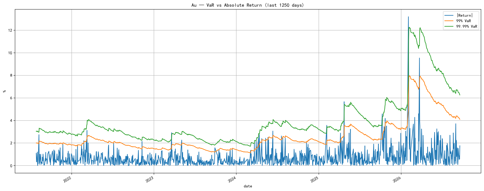
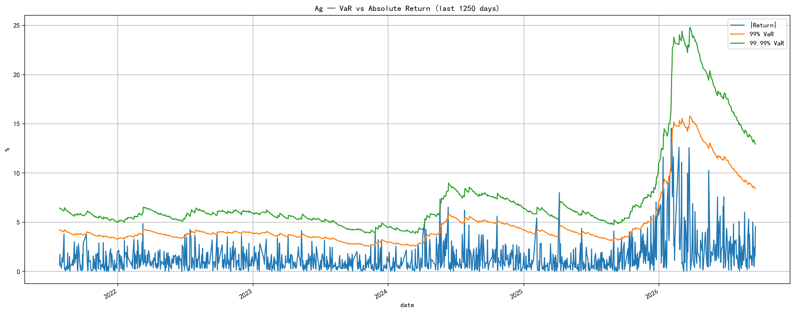

// 黄金 & 白银 Wind 期货指数 — EWMA 波动率 + VaR 保证金计算// Gold & Silver Wind Futures Index — EWMA Volatility + VaR Margin Calculation
三阶段管道式处理流程Three-stage pipeline processing
加载数据 · 对数收益率 · EWMA 波动率 · VaR 计算Load Data · Log Returns · EWMA Vol · VaR Calc
N 日远期 VaR · 手动波动率 · 价格冲击情景N-day Forward VaR · Manual Vol · Shock Scenarios
突破回测 · 滚动窗口 · 可视化 · Excel 导出Breakthrough Test · Rolling Window · Plots · Excel Export
$\lambda=0.98$ RiskMetrics 风格指数加权移动平均。初始化窗口 $k=228$ 天，递推公式 $v_{t+1}=\lambda\cdot v_t+(1-\lambda)\cdot r_t^2$ 。 $\lambda=0.98$ RiskMetrics-style exponentially weighted moving average. 228-day initialization window, recurrence $v_{t+1}=\lambda\cdot v_t+(1-\lambda)\cdot r_t^2$ .
使用 $z_{\alpha/2}$ 而非单尾 $z_\alpha$，产生更保守的保证金估计。99% 置信度下 $z=2.576$ vs 单尾 $z=2.326$ 。对数正态假设： $\text{VaR}=\exp(z\cdot\sigma)-1$ 。Two-tailed $z_{\alpha/2}$ for conservative margin estimates. At 99%: $z=2.576$ vs one-tailed $z=2.326$ . Lognormal assumption: $\text{VaR}=\exp(z\cdot\sigma)-1$ .
冲击后方差 $\lambda\cdot\sigma^2+(1-\lambda)\cdot\ln(1+z)^2$ ，覆盖 2%–15% 六档冲击幅度。测试极端行情下保证金充足率。Post-shock variance $\lambda\cdot\sigma^2+(1-\lambda)\cdot\ln(1+z)^2$ for six shock levels (2%–15%). Tests margin adequacy under extreme conditions.
方法一：|收益率| > 99% VaR 且 ≥ 最低阈值（Au 2%, Ag 4%）。方法二：方差放大 $\eta=1.8$ 倍后重新检验。250 日滚动窗口统计。Method 1: |return| > 99% VaR and ≥ threshold (Au 2%, Ag 4%). Method 2: variance scaled by $\eta=1.8$ . 250-day rolling window.
|收益率| vs 99% / 99.99% VaR · 点击图片可放大|Return| vs 99% / 99.99% VaR · Click to enlarge


| 品种Product | 方法Method | 总突破数Total BT | 交易天数Trading Days | 突破率BT Rate | 250日滚动（最新）250d Rolling (Latest) |
|---|---|---|---|---|---|
| Au | 方法一（含阈值）Method 1 (w/ threshold) | 87 | 4,524 | 1.92% | 8 |
| Au | 方法二（η=1.8）Method 2 (η=1.8) | 39 | 4,524 | 0.86% | 5 |
| Ag | 方法一（含阈值）Method 1 (w/ threshold) | 57 | 3,472 | 1.64% | 10 |
| Ag | 方法二（η=1.8）Method 2 (η=1.8) | 27 | 3,472 | 0.78% | 1 |
完整代码已托管在 GitHub，包含数据处理器、压力测试和回测模块 Full source code on GitHub — data processor, stress test, and backtest modules
GitHub →